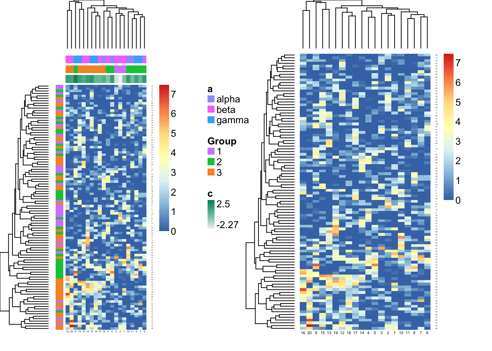

使用NMF包绘制热图
王诗翔 · 2018-12-20
学习文档:https://cran.r-project.org/web/packages/NMF/vignettes/heatmaps.pdf
Heatmap引擎
NMF包中的热图引擎是由aheatmap函数实现，其余的热图函数都是基于它的修改。而aheatmap函数本身又是pheatmap包pheatmap函数的修改版本。引擎具体的优点作者有在文档是写，我就不唠叨了。
数据和模型
为了演示热图函数的用法，我们这里创建一个随机的NMF输入矩阵，以及一些注释和协变量。
library(NMF)
#> 载入需要的程辑包：pkgmaker
#> 载入需要的程辑包：registry
#>
#> 载入程辑包：'pkgmaker'
#> The following object is masked from 'package:base':
#>
#> isFALSE
#> 载入需要的程辑包：rngtools
#> 载入需要的程辑包：cluster
#> NMF - BioConductor layer [OK] | Shared memory capabilities [NO: bigmemory] | Cores 7/8
#> To enable shared memory capabilities, try: install.extras('
#> NMF
#> ')
# random data that follow an 3-rank NMF model (with quite some noise: sd=2)
X <- syntheticNMF(100, 3, 20, noise=2)
# row annotations and covariates
n <- nrow(X)
d <- rnorm(n)
e <- unlist(mapply(rep, c('X', 'Y', 'Z'), 10))
e <- c(e, rep(NA, n-length(e)))
rdata <- data.frame(Var=d, Type=e)
# column annotations and covariates
p <- ncol(X)
a <- sample(c('alpha', 'beta', 'gamma'), p, replace=TRUE)
c <- rnorm(p)
# gather them in a data.frame
covariates <- data.frame(a, X$pData, c)查看下生成的注释数据：
head(rdata)
#> Var Type
#> 1 0.5827 X
#> 2 0.8211 X
#> 3 -0.4373 X
#> 4 0.5508 X
#> 5 -2.2094 X
#> 6 -0.0232 X
head(covariates)
#> a Group c
#> 1 alpha 1 0.271
#> 2 beta 1 1.379
#> 3 alpha 1 1.484
#> 4 beta 1 0.918
#> 5 beta 1 1.099
#> 6 alpha 1 -1.045这里X实际是一个矩阵，rdata是行注释，covariates是列注释。
下面画图：
par(mfrow = c(1, 2))
aheatmap(X, annCol = covariates, annRow = X$fData)
aheatmap(X)
接着，我们使用NMF模型来分解矩阵。
res = nmf(X, 3, nrun = 10)混合系数矩阵：coefmap
NMF结果的混合系数矩阵可以使用coefmap()函数进行绘制。该函数默认添加2个注释通道用来展示从最佳拟合结果中获得的簇（聚类数）和一致性矩阵的层次聚类。在图例中，这两个通道分别以_basis_和_consensus_命名。对于一个简单的NMF模型结果，一致性数据是不能显示的，只能通过最佳拟合进行聚类。
opar = par(mfrow = c(1, 2))
# coefmap from multiple run fit: includes a consensus track
coefmap(res)
# coefmap of a single run fit: no consensus track
coefmap(minfit(res))par(opar)默认情况下：
- 行没有排序
- 列使用
aheatmap的默认顺序，不过设置Colv="basis"就能让列根据由主导的basis组分定义的类进行排序。或者设置Colv="consensus"让列以consensus矩阵排序 - 每一列和为1（刻度化过）
- 调色板使用RColorBrewer包提供的“Y10rRd”，有50个刻度
如果想让coefmap()显示aheatmap()函数的默认形式，设置Rowv=TRUE, Colv=TRUE, scale='none'。
自动注释的通道可以使用tracks=NA进行隐藏，或者设置一个（tracks=':basis'或tracks='basis:'可以分别设置行注释或列注释），图例名可以以tracks=c(Metagene=':basis', 'consensus')的形式进行修改。除此之外，利用annCol参数可以添加用户设定的手动注释。
opar = par(mfrow = c(1,2))
# removing all automatic annotation tracks
coefmap(res, tracks = NA)
# customized plot
coefmap(res, Colv = 'euclidean',
main = "Metagene contributions in each sample", labCol = NULL,
annRow = list(Metagene = ":basis"), annCol = list(':basis', Class = a, Index = c),
annColors = list(Metagene = 'Set2'),
info = TRUE)par(opar)基底矩阵：basismap
基底矩阵可以使用basismap函数进行绘制，默认的行为是添加basis注释通道，每一行显示主导的基底组分，即每一行有最高负载的基底组分。
opar <- par(mfrow=c(1,2))
# default plot
basismap(res)
# customized plot: only use row special annotation track.
basismap(res, main="Metagenes", annRow=list(d, e), tracks=c(Metagene=':basis'))par(opar)默认情况下：
- 列没有排序
- 行根据默认的层次聚类得到的距离进行排序（
eculidean和complete） - 每一行和为1
- 调色板使用RColorBrewer包提供的“Y10rRd”，有50个刻度
一致性矩阵：consensusmap
当使用NMF进行矩阵的时候，一种评估基于指定rank评估聚类稳定性的方法是考虑由多个独立NMF运行结果计算得到的连接矩阵。有篇不错的中文博文讲的比较清晰，建议看看。
单个拟合
我们所用数据res设定的参数是nrun=10，因此包含了10次运行得到的最佳结果以及基于所有运行的一致性矩阵。
opar <- par(mfrow=c(1,2))
# default plot
consensusmap(res)
# customized plot
consensusmap(res, annCol=covariates, annColors=list(c='blue')
, labCol='sample ', main='Cluster stability'
, sub='Consensus matrix and all covariates')par(opar)很显然这是一个对称矩阵，结果看上一半或者下一半都可以。
同一方法，计算多个rank的结果
函数nmf可以接受一组rank序列用来拟合多个不同的rank的结果。
res2_7 <- nmf(X, 2:7, nrun=10, .options='v')然后可以同样的画图
consensusmap(res2_7)单个rank，多种方法
可以比较同一rank不同方法的结果。
res_methods <- nmf(X, 3, list('lee', 'brunet', 'nsNMF'), nrun=10)
class(res_methods)
consensusmap(res_methods)通用热图引擎：aheatmap
还有很多自定义画热图的例子，使用下面的命令查看。
demo('aheatmap')
# or
demo('heatmaps')